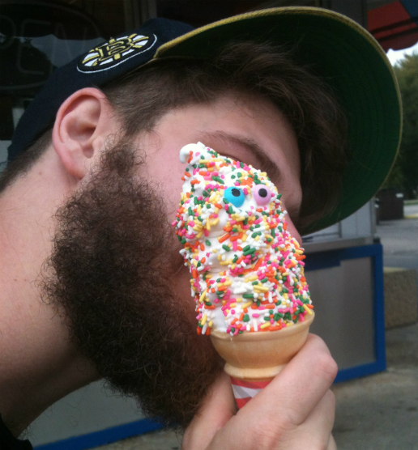

My current body of work is a process of memory brought on by nostalgia. The memories, for the most part are of my childhood: familiar patterns, video games, wrestling. But I battle with these memories being polluted by nostalgia. These memories, or what I preserve to be childhood memories have been corrupted by outside and technological influences. I find myself battling with what I can clearly remember from the memory and what I have learned about the memory through tools like the Internet. I can feel nostalgic for what the memory holds, but I fear that other influences have added information to the original memory. These works display a combined memory that I clearly can recall and bits and pieces that I have learned though other peoples shared experiences. I construct and title the works to show equal influence of the memories.
I go about creating my works through a collage-based approach; arranging the imagery with different types of patterns throughout the page with little to no regard to the importance of any of the collaged patterns. Foregrounds and backgrounds are not given any sort preference due to the flattened values used. If a figure is placed on the page it is displayed float, not willing to establish the ground of the piece.
